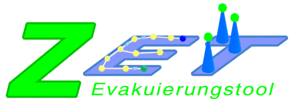

ZET Evakuierungstool
Das Softwaretool ZET, das als freie Software unter der GPL lizensiert ist, ermöglicht es, Evakuierungsszenarios zu modellieren, simulieren und zu optimieren. Dabei können mehrgeschossige Gebäude modelliert, Menschen verteilt und (Not)Ausgänge zugewiesen werden.
Ein berechneter Earliest-Arrival-Fluss führt die Menschen zu den besten Ausgängen (im Sinne einer möglichst schnellen Evakuierung des Gebäudes). Da die Berechnung mittels dynamischer Flüsse einige idealistische Annahmen macht, kann auch eine Simulation durchgeführt werden. Eine fortgeschrittene Visualisierung und eine Statistik runden das Paket ab und erlauben die Analyse der Daten.
Editor
ZET enthält einen integrierten Editor mit dem Evakuierungsszenarios modelliert werden können. Mit dem Editor ist es möglich, verschiedene Etagen, Räume auf den Etagen und spezielle Gebiete innerhalb der Räume zu erzeugen. Die Gebiete können dabei eine spezielle Semantik zugewiesen bekommen, wie z. B. sicherer Ort. Alle Räume und Gebiete werden von beliebigen geschlossenen Polynomen dargestellt.
Die zu Evakuierenden Personen können automatisch in sogenannte Belegungsgebiete verteilt werden. Die Personen können dabei in verschiedene Gruppen mit unterschiedlichen Eigenschaften aufgeteilt werden. Die Eigenschaften und Gruppen können mit dem Belegungseditor verändert werden. Jede Eigenschaft kann dabei mit einer Wahrscheinlichkeitsverteilung angepasst werden.
Visualisierung
Sowohl die Simulation mit einem zellulären Automaten als auch der berechnete Netzwerkfluss können in 3D mittels OpenGL visualisiert werden. Die Kamera ist dabei mit den üblichen Maus- und Tastaturkommandos steuerbar. Innerhalb der Visualisierung sind verschiedene Informationen zugänglich, wie zum Beispiel die Ausnutzung bestimmter Gebiete. Die Visualisierung kann in perspektivischer Sichtweise oder in isometrischer und orthognaler Projektion dargestellt werden.
Get it!
ZET 1.0.3a Suite für Java 6. (md5: 73e7515d14a42ee9257ea6f8444d7be7)
Andere Versionen, Signaturen und Quellcodes gibt es bei den Downloads.